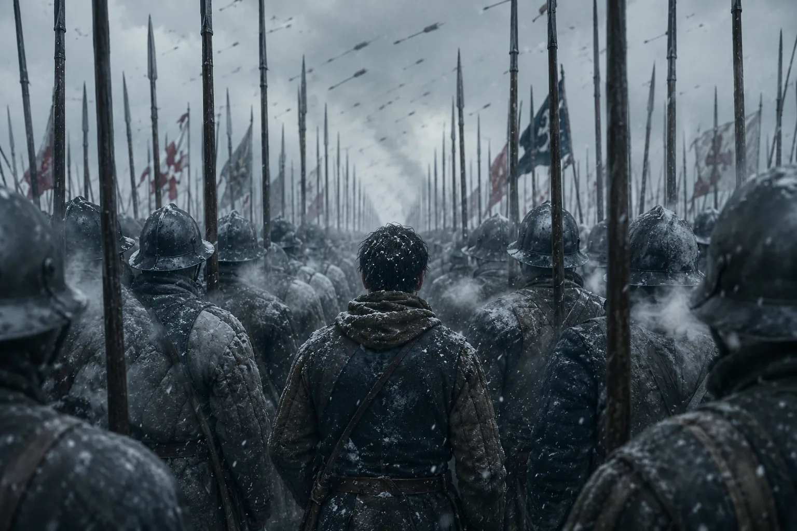
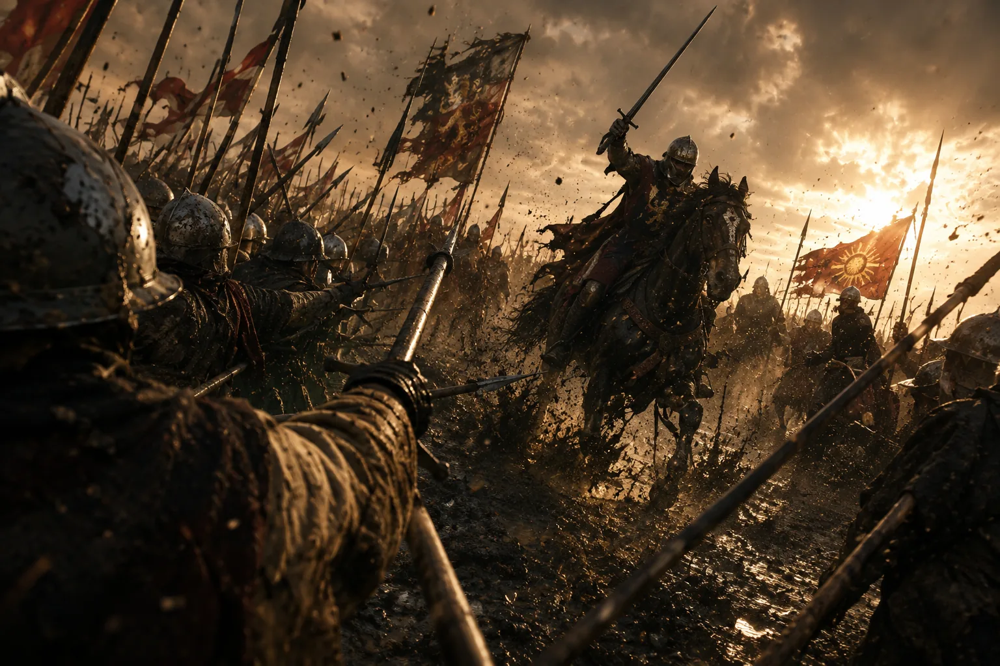
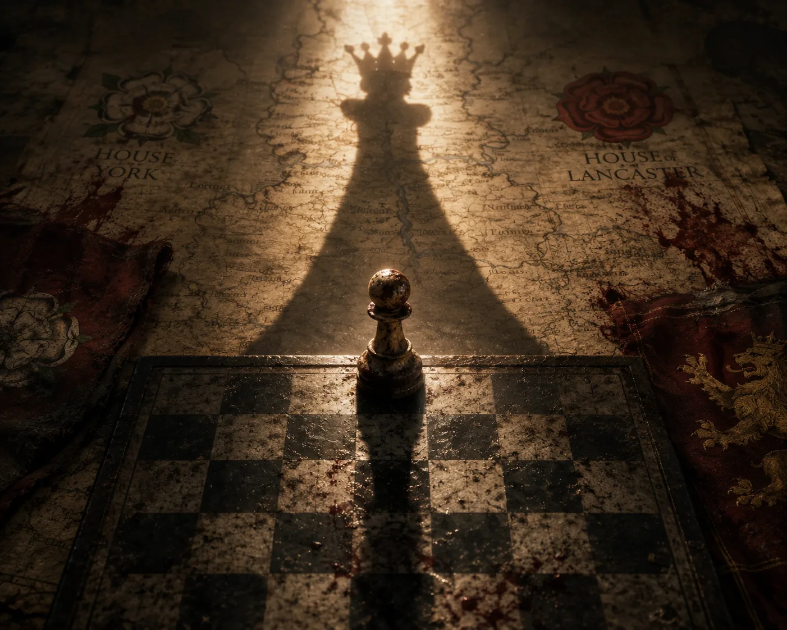
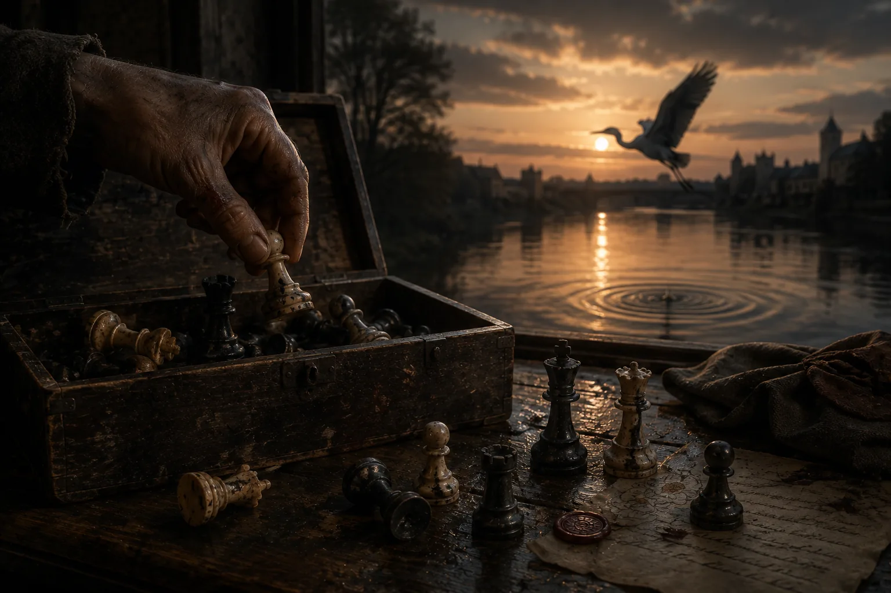

Oftentimes, life resembles more a game of chess than a stage, where every piece is driven forward by that unseen yet incessant force.
I was only seventeen years of age, armed with a wooden pike and winter in my lungs, when I first stepped onto the frozen earth of Towton. The snow was a cold altar cloth laid over the ground and the breath of thousands rose in pale banners, and if you ask me now what I believed then I would say I believed in squares, square on square of duty, because a pawn is taught to move forward and not to look left or right or back when the arrows lift like a black incense against the sky. We stood in ranks, the white rose stitched in thread that burned against the blue, and far off I watched the dark host gather around the vacancy that was Henry of Lancaster, poor king of inward storms, while the true tempest of his house wore the red rose and the iron will of that lioness, Margaret of Anjou. And then we went down the board, step by step, the snow sticking to our greaves, the snow falling gently.

As the minstrels would later sing, Towton lifted Edward of York onto the throne, but I only remember how soldiers froze to death standing. After the battle, we gathered the fallen by ranks: they were stiff, faceless, anonymous, and unidentifiable save for their livery. Edward IV was crowned and the kingdom sent us to walls and marches — to Ludlow, where people’s eyes were as cold as its stones, where my hands forgot their tremor and learned the winter work of barracks: oil, whetstone, drill, prayer, day after day after day.
Rumor traveled through the corridors like a sly rogue, whispering that Warwick — our iron lord, the one they called Kingmaker — had set himself against his own king. In the chapels I heard the old men of God weigh justice as butchers would a muscle of lamb, and all the while, out across the Narrow Sea, Margaret gathered ships and shadows and her exiled son, and I knew, as a pawn is taught to know, that the opening is a promise the midgame will betray.
Fog at Barnet rolled in close to the ground as if the heavens leaned in out of interest; we killed by misprision, friend to friend and oath to oath, banners hidden from the eyes that served them, and when Warwick fell, time seemed to miss a beat. I saw his horse thrash once, saw him fall to the dust beneath, and had the naïve thought that the board would not know how to be a board without such an important piece, and then we were running, and Barnet was done, and Tewkesbury not long after, and Margaret’s cause drained from England like color from a banner left too long in rain, and still I was stepping forward in the only way a pawn is taught to do, promoted not by dreams of glory but by survival and the inherent intimacy a man takes on with his own breath.
There were evenings when I thought we had won and peace had a taste — the decent, homely taste of bread and mead and mutton and sleep — and there were mornings when I knew peace is only the infinitesimal distance between bells ringing for Mass and bells ringing for muster. We believed the King’s second reign would hold, yet Fate sent men with hammers underneath: Edward died early, and Gloucester — Richard, all nerve and iron — moved as if the board had tilted toward him. The boy-king’s shadow lengthened and then was gone, and Richard wore the crown, and many who had fought for York since Towton felt a draft across their necks and, shivering, turned to the last sliver of hope — Henry Tudor, the dormant dragon in his Welsh den.
Bosworth dawned with a red-gold light that was neither homely nor bloody, and the fields steamed feverishly. Richard’s lines held the ridge firmly, and Tudor’s men moved with the lucidity of players who have learned the board by candlelight and now see it under the rays of the sun. I carried a pike smoother than my own palm from polishing it with rags and old talisman-sayings, and I stood mid-file with men whose names I had borrowed for a day — John of Nottingham, Will the tinker’s son — knowing we might forget them or exchange them back to the silence by noon. When Richard spurred forward in that hard straight thrust toward Henry’s standard, I felt the whole field jump a line — I went with him because the rank pushed me and because courage is often momentum by another name, and we cut and cut again until the air turned viscous — and then the ring closed, and I heard him cry after a fresh horse, and it was then that I understood that kings are only common men permitted to want aloud…

I cannot tell you precisely when the crown left his head and entered history, but only that the Red Dragon climbed a little higher in the sky and every piece on the board took a half-step back, for we had come to the moment the game pretends is its end; yet even as Henry Tudor stood very straight and very mortal, even as the lords recalculated their family trees, I felt a small, particular thing: that I had reached the far side without knowing that the squares behind me had added up to a life.
The Eighth Rank.
They told me — cheering, clapping me on the back — that I might choose, as if life was a box with jewels laid out in equal worth: the cross, the tower, the helm, or the crown; the church persuaded me with honeyed rhetoric, the castles spoke through their stewards, the horsemen sang their old song of chivalry, and the court murmured of the wide moving power of the monarch. I hesitated, which is unseemly in a pawn, for hesitation is how men die in battle. And yet, I could not help but see in each emblem a history of grief, as if every office held only a different kind of sorrow.
At last I chose the queen, not for glory but for memory, because I had seen a woman hold a kingdom together with her teeth and then lose it and still have teeth enough to speak, and because I wanted to move in all directions and lay a hand, however lightly, on all the edges of our suffering. I tell you the cheer that rose then was a sweet, wild thing, like the first harvest when a plague has passed, and I moved through the crowd with the strange lightness of a piece that has been lifted from its old rules and set down among the major powers, and though I was no royal, men looked at me as if I could change their gravity on the scale

… and for a little while, I could.
Checkmate.
What followed was not what the legends had promised. Parchment was sent in from all over the kingdom, wax heated then allowed to cool, accounts corrected themselves with a scratch of the quill; I learned how the kingdom is always slightly broken and the repair is ceaseless, like a chapel roof in a rainy country; I learned that the commonwealth is a board the rain warps every spring, and that to move like a queen is to move with care across a country of infinitesimal cracks, and all the while the new king grew into his shoes and the two roses entwined into a single emblem and the song about it made children brave in their sleep…
We said we had ended the hostility and begun a peace that would last, and in a way we had, but the heart remembers what the brain insists it has forgotten. There were nights I woke remembering the exact width of a rank by the measure of my two feet set heel to toe, and there were days when the look in a widow’s eyes was a lance’s stroke across my chest; I could, with a word, lift a tax or lower a sword; I could, with a silence, let a man live with his small theft so his children might have bread. Such is the power the board bestows upon the one that reaches the far side and does not choose to run.
Yet I must tell you the truth.
On a certain autumn evening, passing the chapel where Richard’s name is prayed for, I felt time blur around me, as if the world had been holding its breath since Bosworth and only just now exhaled, and I saw that we had won and yet nothing stays; kings and queens are replaced by better or by worse, bishops by bishops more political or more pious, knights by the sons of knights who ride with prettier horses, rooks by rooks that weather more and more in the wind, and the pawns by other pawns just tall enough to carry the first piles of firewood; I saw the lid of the great wooden box lifted by invisible hands and felt in my bones that we would all go back into it, and the pieces would lie together without argument, and then on some rainy morning some child would cry out for a game and history would set its pieces on parchment again and we would begin, courteous as ever, to slaughter one another.
I do not despise this. If I could tell the boys at Towton anything (and God knows I have assembled them often enough in my sleep and counted them off by files), it would be that the Eighth Rank is not a ladder out of the bound of the world, only a bell you must carry around your neck better; that checkmate is not the last word, it is only the burden that one must bear and the silence in between eras strong enough to suffocate…
Now I am older than the legends and I carry in me the old game’s weather: Towton’s snow on my lashes, Barnet’s fog in my lungs, Bosworth’s amber in my eyes; when I think of Margaret now, I do not see a fury but a mother with her back to the sea; when I think of Richard, I do not see a monster but a man who refused to abdicate his own will until the last hoofprint filled with water; when I think of Henry, I see a patient artist fitting two roses onto one canvas and knowing it will hold at least for a time being. And myself? I try not to think at all, only to stand, as a pawn is taught to stand, where I am placed.
Then there was a day.
Long after the marriage that made a new emblem for children to stitch, when a messenger came with news I can no longer remember, and I thanked him and turned to the window and saw the buzz of the city. Vaguely I heard the sound the board makes when a game is concluded and the pieces are guided into the mildew-filled darkness; I knew then that I would go back into the box like the rest, and that someday a hand would lift me again and set me among strangers who would become my brethren, and that we would begin.
And because of this, I was not sad; I shall carry the lightness with me down the corridor and into the long evening, and if my step had music in it no one remarked it, for we are all music briefly, and then silence.
Beyond the city the river shone, and a heron touched its surface while skimming past, leaving only circles that widened until they touched both banks and were gone.
